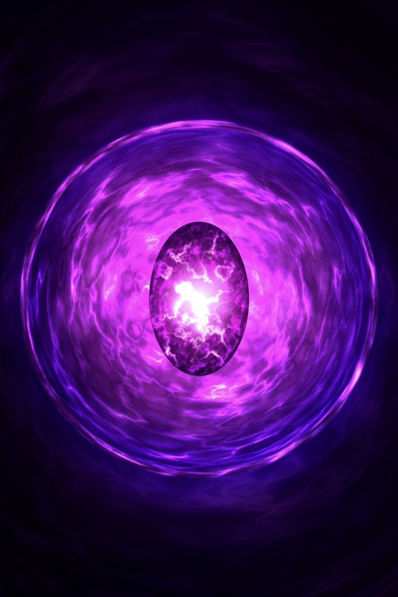
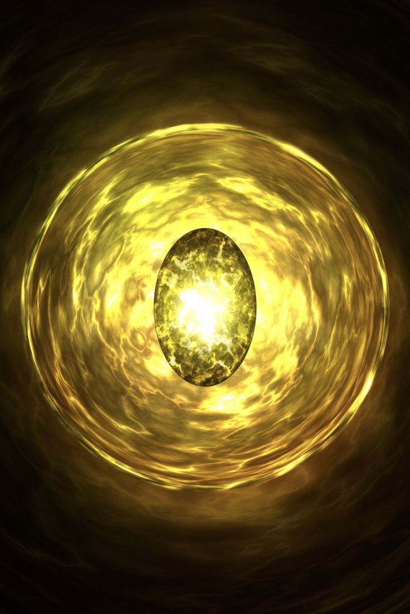
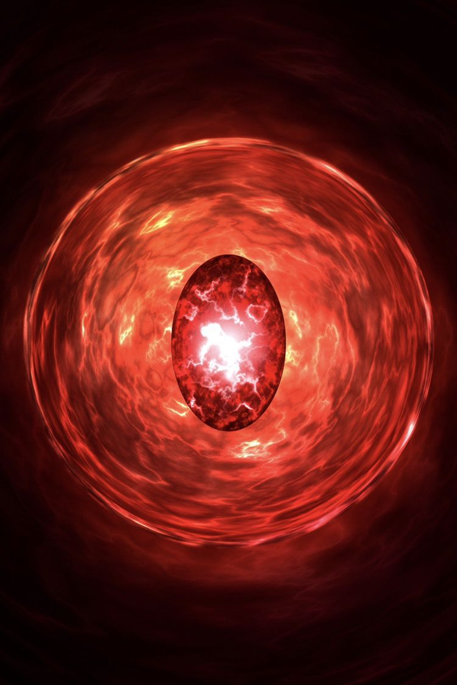
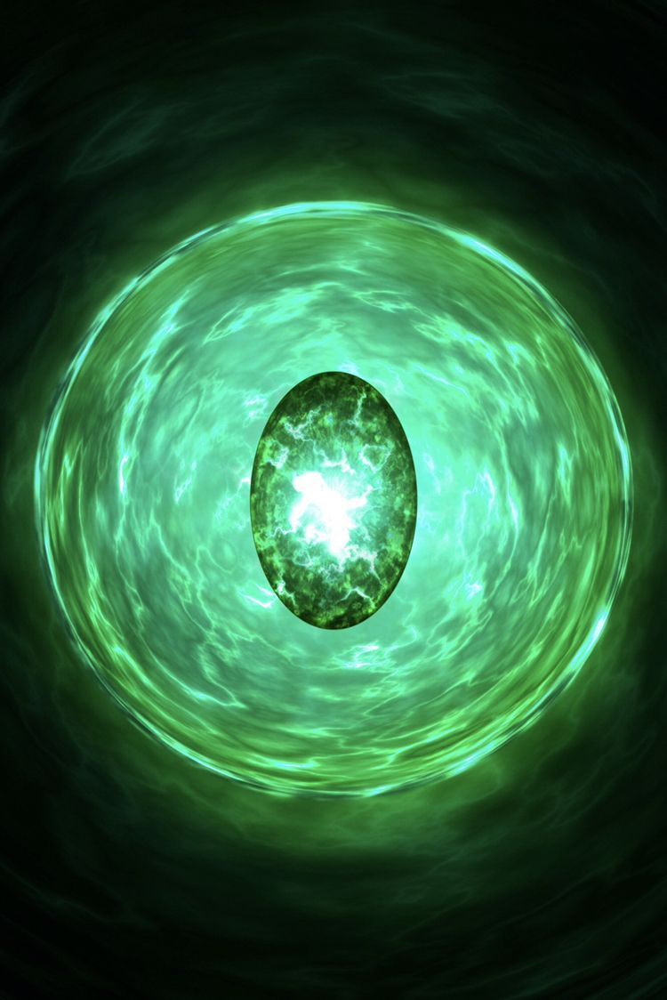
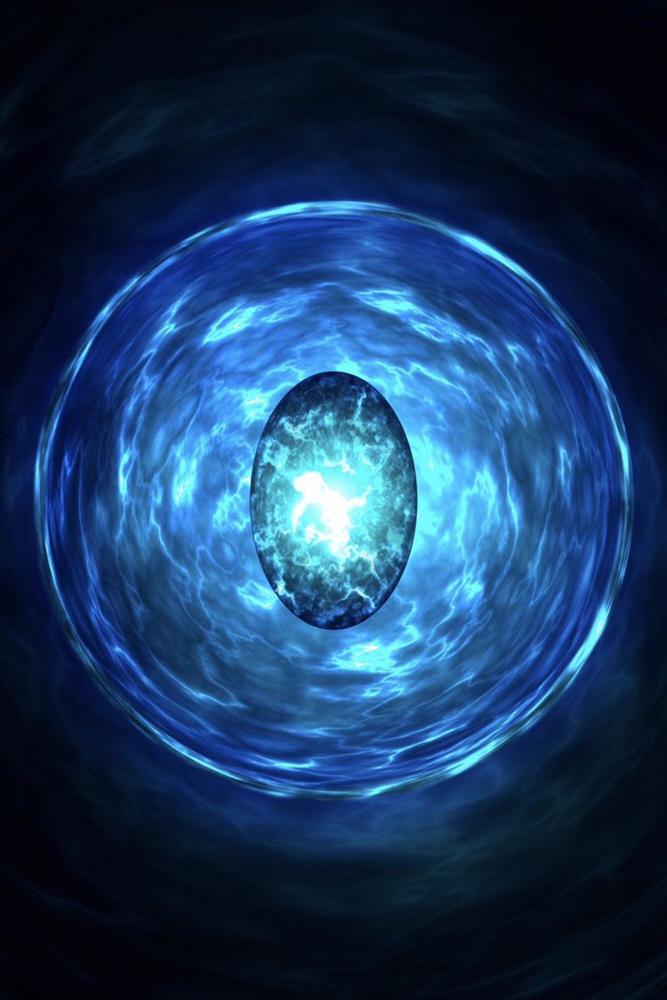

| Камень космоса | Тессеракт появился в фильме «Тор: Рагнарёк», где его забрал Локи перед уничтожением Асгарда Суртуром. В фильме «Мстители: Война бесконечности» Танос нападает на корабль асгардийцев, получает от Локи Тессеракт и извлекает оттуда Камень пространства. После этого он несколько раз использует его для телепортации. |  | |
| Камень силы | В этой вселенной камень силы долгое время находился в оболочке под названием Сфера. Камень силы был создан для того, чтобы сдерживать остальные камни бесконечности. Он обладает огромной силой и может уничтожить целые планеты. При этом камень может убить и тех, кто им обладает. |  | |
| Камень реальности | Эфир — мистическая сила, которая существовала задолго до появления Девяти миров. Эфир способен превращать материю в тёмную материю. Эфир может существовать бесконечно долго, но он является чем-то вроде паразита, источником энергии для него является как правило какое-либо смертное существо, в тело которого проникает Эфир. |  | |
| Камень разума | амень разума (англ. Mind Stone) - один из шести камней бесконечности, остаток из сингулярности, которая старше Вселенной и представляет она себя тканью Разума. Ранее он находился в скипетре, который нашёл Безумный Титан Танос. |  | |
| Камень времени | Глаз Агамотто появился в фильме Доктор Стрэндж. По данным главы Marvel Studios Кевина Файги, Глаз имеет способность манипулировать вероятностями и временем, так как он содержит камень времени; пятый Камень Бесконечности. |  | |
| Камень Души | Камень души (англ. Soul Stone) - один из шести камней бесконечности, остаток сингулярности, который предшествует Вселенной. Некоторое время он находился на планете Вормир под наблюдением хранителя камня, прежде чем Танос прибыл на планету в поисках камня, пожертвовав своей дочерью Гаморой, чтобы получить его. |
|